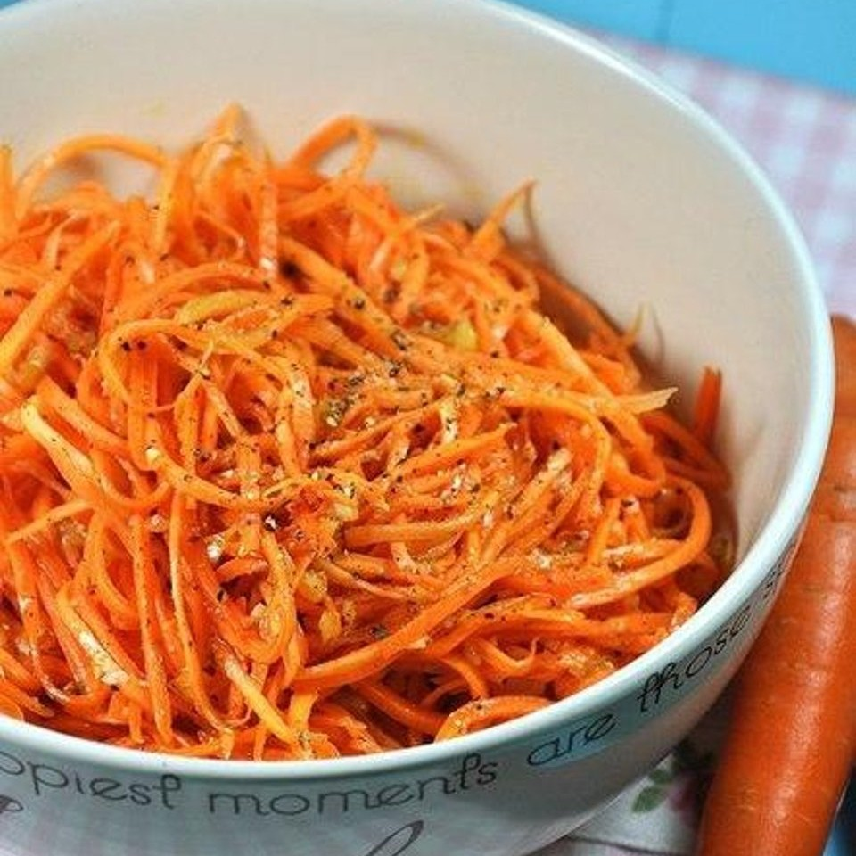

приготовление:
-
500 г моркови вымыть, очистить и нарезать тонкой соломкой или натереть на тёрке для корейской моркови. Очистить 2–3 зубчика чеснока и пропустить через пресс.
-
Добавить к моркови 0,25 ч. л. молотого кориандра, красный и чёрный молотый перец, соль, щепотку сахара и чеснок. Вместо отдельных специй можно использовать готовую смесь для моркови по-корейски.
-
Очистить и мелко нарезать 1 луковицу. Хорошо разогреть в сковороде 50 мл растительного масла, добавить лук и обжарить до насыщенного коричневого цвета. Удалить лук, горячим маслом полить морковь и хорошо перемешать.
-
Добавить 1,5–2 ст. л. уксуса 9%, перемешать и хорошо охладить морковь в холодильнике.